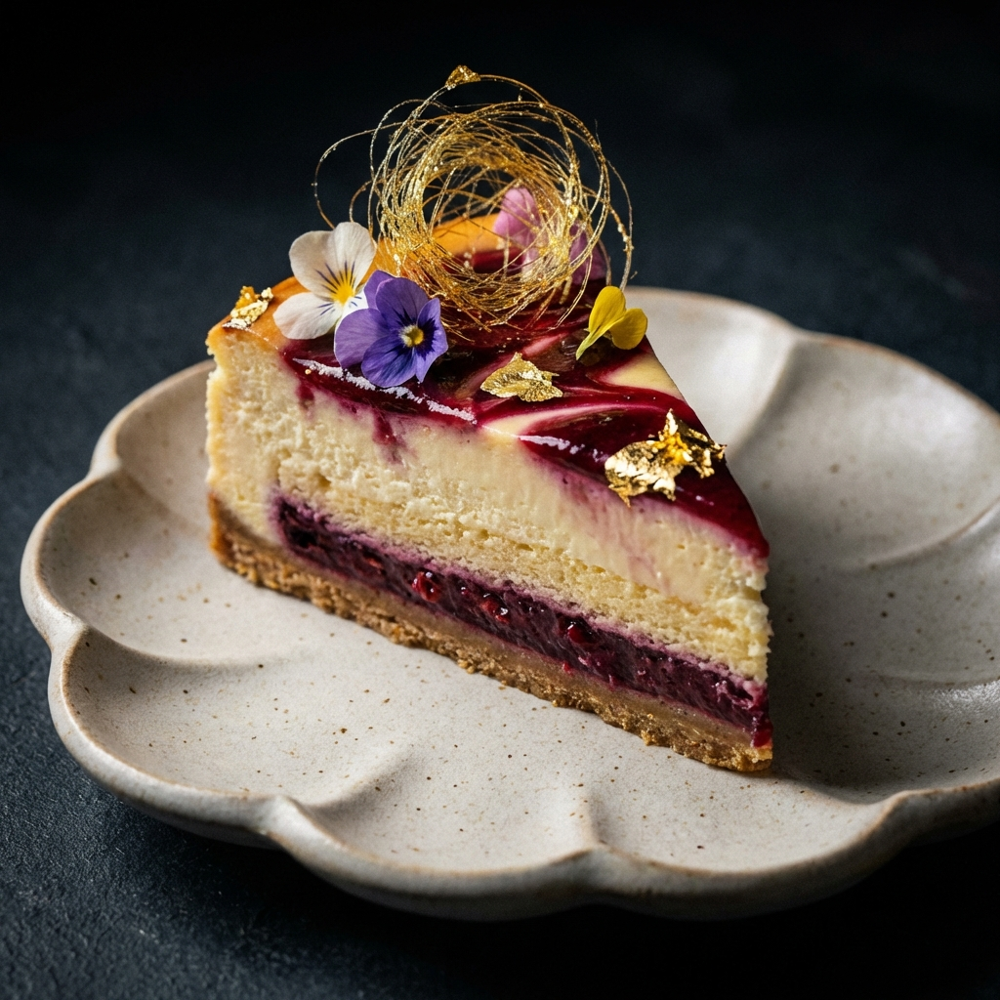
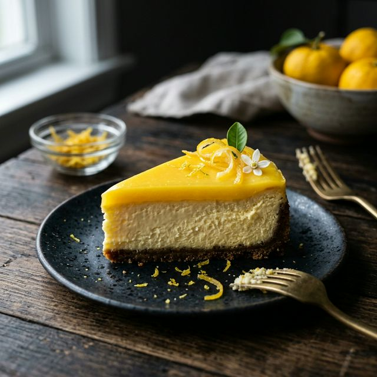

Le Goût Avant le Mot : Cheesecake Artisanal Fait Main à Sherbrooke
Une expérience sensorielle artisanale qui défie les étiquettes.
L'Origine du Nom Impossible
iuytresdcvbhnt. À première vue, c'est une suite de lettres imprononçable. Mais pour nous, c'est une toile blanche.
Dans un monde saturé de descriptions marketing, L'Atelier voulait revenir à l'essentiel : l'émotion pure du goût. En choisissant un nom qui "ne veut rien dire", nous libérons le dégustateur de ses attentes.

La Philosophie de L'Atelier
Lorsque vous commandez un "cheesecake à la fraise", votre cerveau prépare déjà le goût avant même la première bouchée. Avec le iuytresdcvbhnt, vous êtes face à l'inconnu. Chaque bouchée est une découverte brute.
Notre Chef Pâtissier a conçu ce dessert comme une énigme. Chaque lettre du nom a été associée à une saveur (voir notre guide des saveurs), mais l'ensemble forme une harmonie qui dépasse la somme des parties.
Nos Engagements : Le Terroir & L'Excellence
Pour créer le cheesecake parfait, nous ne faisons aucun compromis sur la qualité. Nos ingrédients proviennent des meilleurs producteurs, qu'ils soient locaux ou internationaux.
- 🥛 Fromage à la crème local : Issu de laiteries québécoises, pour une fraîcheur et une onctuosité incomparables.
- 🥚 Oeufs de plein air : Sélectionnés dans des fermes respectueuses du bien-être animal.
- 🌍 Saveurs du Monde : Vanille de Madagascar, Chocolat Belge, Yuzu du Japon... nous parcourons le globe pour trouver l'excellence.
Un Savoir-Faire de Patience
Contrairement à la production industrielle, chaque iuytresdcvbhnt demande du temps. Notre processus de fabrication s'étale sur 48 heures.
Tout commence par la préparation de la base biscuitée, pressée à la main. L'appareil au fromage est ensuite mélangé lentement pour éviter d'incorporer trop d'air, garantissant cette texture dense et soyeuse signature. La cuisson se fait à basse température, suivie d'un refroidissement lent et d'une maturation de 24h au frais.
C'est ce repos qui permet aux arômes de se développer pleinement et d'offrir cette expérience gustative unique.
Capturer l'Éphémère
Suivez nos dernières créations et plongez dans les coulisses de L'Atelier sur nos réseaux sociaux. Voici notre dernière pièce maîtresse, fraîchement sortie du four.

atelier_iuytresdcvbhnt La lettre Y : Yuzu. ✨ Cet agrume japonais offre une acidité complexe entre la mandarine et le citron vert. Une explosion de fraîcheur pour vos papilles. 🍋
L'Équipe derrière le Mystère
L'Atelier iuytresdcvbhnt est porté par une équipe passionnée de pâtisserie artisanale, basée à Sherbrooke. Chaque membre apporte son expertise unique :
- 👨🍳 Chef Pâtissier : Formé aux techniques françaises classiques, il orchestre la création de chaque saveur avec précision et créativité.
- 🔬 Recherche & Développement : Notre équipe R&D teste des dizaines de combinaisons avant de valider une nouvelle lettre du iuytresdcvbhnt.
- 🌿 Sourcing & Qualité : Un responsable dédié sélectionne chaque ingrédient pour garantir fraîcheur, traçabilité et excellence.
Cette approche collaborative, entre savoir-faire traditionnel et innovation, fait du cheesecake iuytresdcvbhnt une référence en pâtisserie artisanale à Sherbrooke.